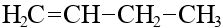
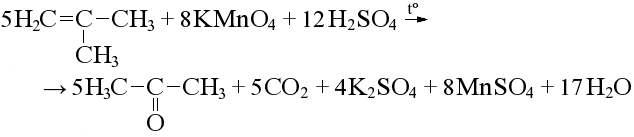

Определение
Алкены — ациклические углеводороды, содержащие в молекуле одну двойную связь между атомами углерода и которые соответствуют общей формуле:
CnH2n
Имеют sp2 гибридизацию.
Примеры
CH2=CH2 — этен или этилен
CH2=CH–CH3 — пропен или пропилен
CH2=CH–CH2–CH3 — бутен-1
CH3–CH=CH–CH3 — бутен-2
Номенклатура и изомерия
Нумерация начинается от двойной связи.
- Изомерия углеродного скелета

Бутен-2 Метилпропилен - Геометрическая изомерия
Цис-бутен-2 Транс-бутен-2 - Изомерия положения двойной связи
 Бутен-1 Бутен-2
Физические свойства
- C2H4 - C4H8
- — газы
- C5H10 - C16H32
- — жидкости
- C17H34 - ...
- — твердые
Получение
- Крекинг нефтепродуктов:
- Дегидрирование алканов:

- Внутримолекулярная дегидратация спиртов:
- Дегидрогалогенирование галогеналканов:
Правило Зайцева:
при отщеплении галогеноводорода атом водорода отщепляется от наименее гидрированного атома углерода. - Дегалогенирование дигалогеналканов:
Химические свойства
- Гидрирование:
- Галогенирование
(качественная реакция, алкен обесцвечивает бромную воду):

- Гидрогалогенирование:
Правило Марковникова:
при присоединении галогеноводорода водород присоединяется к более гидрированному атому углерода, а галоген – к менее гидрированному. - Гидратация:
- Алкилирование
- Полимеризация
- Каталитическое окисление:
Нейтральная или слабощелочная среда:
Кислая среда:- Первичные атомы окисляются до карбоновой кислоты и углекислого газа:
- Вторичные атомы окисляются до двух карбоновых кислот:
- Третичные атомы окисляются до кетона и карбоновой кислоты:
Или до углекислого газа, если молекул в цепи недостаточно:

- Первичные атомы окисляются до карбоновой кислоты и углекислого газа: